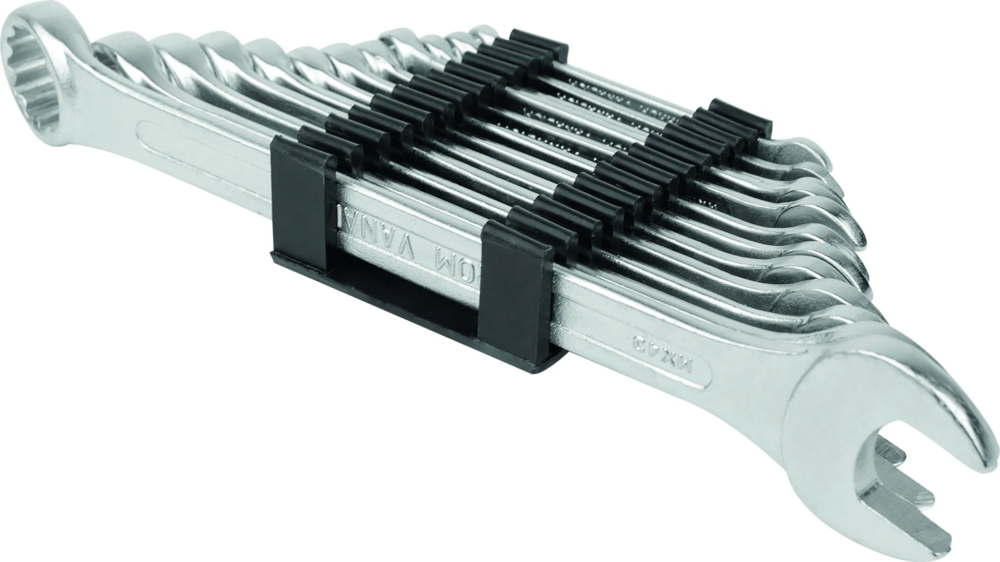
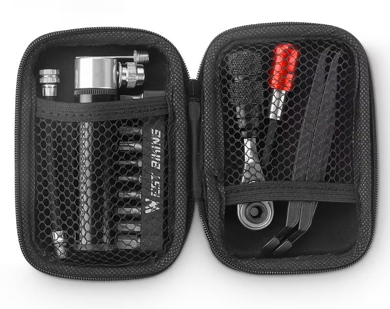
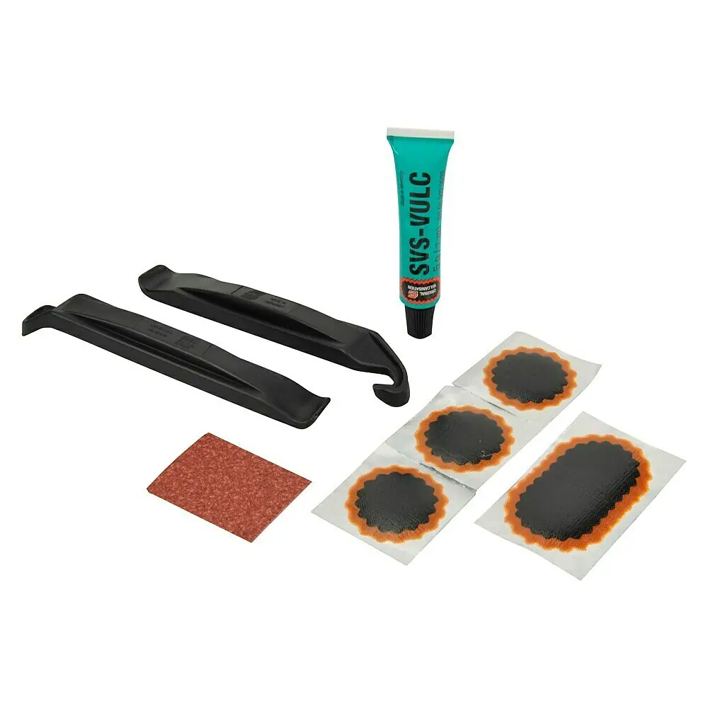

Eine Handvoll von Maulringschlüssel. Nur just in case und nur die kleinsten..
Extra
Nichts besonderes. Das erste Multitool war beim ersten gebrauch schon kaputt.
Werkzeug
Fahrrad Flickzeug. Eins aus dem Baumarkt, dass andere vom Lokalen Campingladen. Hatte noch nie einen Platten dank Shimano Schläuchen.
Extra